All in One View
Content from Imaging Software for microscopy
Last updated on 2026-09-03 | Edit this page
Overview
Questions
- What are the different software options for viewing microscopy images?
Objectives
- Explain the pros and cons of different image visualisation tools (e.g. ImageJ, Napari and proprietary options)
Choosing the right tool for the job
Light microscopes can produce a very wide range of image data, for example:
- 2D or 3D
- Time series or snapshots
- Different channels
- Small to large datasets

With such a wide range of data, there comes a huge variety of software that can work with these images. Different software may be specialised to specific types of image data, or to specific research fields. There is no one ‘right’ software to use - it’s about choosing the right tool for yourself, your data, and your research question!
Some points to consider when choosing software are:
What is common in your research field?
Having a good community around the software you work with can be extremely helpful - so it’s worth considering what is popular in your department, or in relevant papers in your field.Open source or proprietary?
It’s important to consider if the software you are using is open-source or proprietary (requiring a one-off payment or a regular subscription fee to use). Open source means it is more freely available and likely more accessible to a larger group of researchers, but it may not be as robust or stable as software commercially developed by large team, particularly if you are interested in a very specific feature that it provides. Open source software often will rely on more open file formats and workflows, and they are designed to be extended by the community.Support for image types?
For example, does it support 3D images, or timeseries?Can it be automated/customised/extended?
Can you automate certain steps with your own scripts or plugins? Scripts are lists of commands to be carried out by a piece of software e.g. load an image, then threshold it, then measure its size…These are often used to automate processes, especially for high throughput studies. Plugins add optional new features to a piece of software (rather than automating use of existing features). They’re designed to be reusable so other members of the community can easily benefit from these new features. Both of these components are useful to make sure your analysis steps can be easily shared and reproduced by other researchers.
As always, the right software to use will depend on your preference, your data and your research question. This being said, we will only use open-source software in this course, and we encourage using open-source software where possible.
Fiji/ImageJ and Napari
While there are many pieces of software to choose from, two of the most popular open-source options are Fiji/ImageJ and Napari. They are both:
- Freely available
- ‘General’ imaging software i.e. applicable to many different research fields
- Supporting a wide range of image types
- Customisable with scripts + plugins
Both are great options for working with a wide variety of images - so why choose one over the other? Some of the main differences are listed below if you are interested:
Python vs Java
A big advantage of Napari is that it is made with the Python programming
language (vs Fiji/ImageJ which is made with Java). In general, this
makes it easier to extend with scripts and plugins as Python tends to be
more widely used in the research community. It also means Napari can
easily integrate with other python tools e.g. Python’s popular machine
learning libraries.
Maturity
Fiji/ImageJ has been actively developed for many years now (>20
years), while Napari is a more recent development starting
around 2018. This difference in age comes with pros and cons - in
general, it means that the core features and layout of Fiji/ImageJ are
very well established, and less likely to change than Napari. With
Napari, you will likely have to adjust your image processing workflow
with new versions, or update any scripts/plugins more often. Equally, as
Napari is new and rapidly growing in popularity, it is quickly gaining
new features and attracting a wide range of new plugin developers.
Built-in tools
Fiji/ImageJ comes with many image processing tools built-in by default -
e.g. making image histograms, thresholding and gaussian blur. While
Napari is more minimal by default and mostly focusing on image display,
the core functionality is continuing to evolve. Some of these features
which have in the past required installation of additional plugins are
now being built in.
Specific plugins
There are excellent plugins available for Fiji/ImageJ and Napari that
focus on specific types of image data or processing steps. The
availability of a specific plugin will often be a deciding factor on
whether to use Fiji/ImageJ or Napari for your project.
Ease of installation and user interface
As Fiji/ImageJ has been in development for longer, it tends to be
simpler to install than Napari (especially for those with no prior
Python experience). In addition, as it has more built-in image
processing tools, it tends to be simpler to use fully from its user
interface. Napari meanwhile is often strongest when you combine it with
some Python scripting (although this isn’t required for many
workflows!)
For this lesson, we will use Napari as our software of choice. It’s worth bearing in mind though that Fiji/ImageJ can be a useful alternative - and many workflows will actually use both Fiji/ImageJ and Napari together! Again, it’s about choosing the right tool for your data and research question.
- There are many software options for light microscopy images
- Considerations when choosing a software for your analysis include functionality, cost, availability, and customisation.
- Napari and Fiji/ImageJ are popular open-source options
Content from Getting Started With Napari
Last updated on 2026-09-03 | Edit this page
Overview
Questions
- How can Napari be used to view images?
- How can I interact Napari through the console or via Jupyter Lab?
Objectives
- Use Napari to open images
- Navigate the Napari viewer (pan/zoom/swapping between 2D and 3D views…)
- Change colormap (LUT) in Napari
- Explain the main parts of the Napari user interface
- Install plugins from Napari Hub
In this section, we will open up with Napari in a number of different ways, and understand how it represents images, as well as measurements derived for it.
Opening Napari
Let’s get started by opening a new Napari window - you should have already followed the installation instructions. Note this can take a while the first time, so give it a few minutes!
BASH
# Change micro-sam to wherever you put your environment
cd napari-ai-workshop
source .venv/bin/activate
napari
Opening images
Napari comes with some example images - let’s open one now. Go to the
top menu-bar of Napari and select:File > Open Sample > napari builtins > Cells (3D+2Ch)
You should see a fluorescence microscopy image of some cells:

Napari’s User interface
Napari’s user interface is split into a few main sections, as you can see in the diagram below (note that on Macs the main menu will appear in the upper ribbon, rather than inside the Napari window):

Let’s take a brief look at each of these sections - for full information see the Napari documentation.
Main menu
We already used the main menu in the last section to open a sample image. The main menu contains various commands for opening images, changing preferences and installing plugins (we’ll see more of these options in later episodes).
Canvas
The canvas is the main part of the Napari user interface. This is where we display and interact with our images.
Try moving around the cells image with the following commands:
Pan - Click and drag
Zoom - Scroll in/out (use the same gestures with your mouse
that you would use to scroll up/down
in a document)Dimension sliders
Dimension sliders appear at the bottom of the canvas depending on the type of image displayed. For example, here we have a 3D image of some cells, which consists of a stack of 2D images. If we drag the slider at the bottom of the image, we move up and down in this stack:

Pressing the arrow buttons at either end of the slider steps through one slice at a time. Also, pressing the ‘play’ button at the very left of the slider moves automatically through the stack until pressed again.
 sand More
sliders can appear if our image has more dimensions (e.g. time series,
or further channels).
sand More
sliders can appear if our image has more dimensions (e.g. time series,
or further channels).
Viewer buttons
The viewer buttons (the row of buttons at the bottom left of Napari) control various aspects of the Napari viewer:
2D/3D  /
/ 
This switches the canvas between 2D and 3D display. Try switching to the 3D view for the cells image:

The controls for moving in 3D are similar to those for 2D:
Rotate - Click and drag
Pan - Shift + click and drag
Zoom - Scroll in/outRoll dimensions 
This changes which image dimensions are displayed in the viewer. For example, let’s switch back to the 2D view for our cells image and press the roll dimensions button multiple times. You’ll see that it switches between different orthogonal views (i.e. at 90 degrees to our starting view). Pressing it 3 times will bring us back to the original orientation.

Transpose dimensions 
This button swaps the two currently displayed dimensions. In our cells image, this means the x and y axis are switched. Pressing the button again brings us back to the original orientation.

Grid 
This button displays all image layers in a grid (+ any additional layer types, as we’ll see later in the episode). Using this for our cells image, we see the nuclei (green) displayed next to the cell membranes (purple), rather than on top of each other.
Layer list
Now that we’ve seen the main controls for the viewer, let’s look at
the layer list. ‘Layers’ are how Napari displays multiple items together
in the viewer. For example, currently our layer list contains two items
- ‘nuclei’ and ‘membrane’. These are both Image layers and
are displayed in order, with the nuclei on top and membrane
underneath.

We can show/hide each layer by clicking the eye icon on the left side of their row. We can also rename them by double clicking on the row.
We can change the order of layers by dragging and dropping items in the layer list. For example, try dragging the membrane layer above the nuclei. You should see the nuclei disappear from the viewer (as they are now hidden by the membrane image on top).

Here we only have Image layers, but there are many more
types like Points, Shapes and
Labels, some of which we will see later in the episode.
Layer controls
Next let’s look at the layer controls - this area shows controls only
for the currently selected layer (i.e. the one that is highlighted in
blue in the layer list). For example, if we click on the nuclei layer
then we can see a colormap of green, while if we click on
the membrane layer we see a colormap of magenta.
Controls will also vary depending on layer type (like
Image vs Points) as we will see later in this episode.
Let’s take a quick look at some of the main image layer controls:
Opacity
This changes the opacity of the layer - lower values are more transparent. For example, reducing the opacity of the membrane layer (if it is still on top of the nuclei), allows us to see the nuclei again.
Contrast limits
The contrast limits adjust what parts of the image we can see and how bright they appear in the viewer. Moving the left node adjusts what is shown as fully black, while moving the right node adjusts what is shown as fully bright.
Colormap
Along with the contrast limits, the colormap determines how pixels values are assigned colors on the display. Clicking in the dropdown shows a wide range of options that you can swap between.
Blending
This controls how multiple layers are blended together to give the final result in the viewer. There are many different options to choose from. For example, let’s put the nuclei layer back on top of the membrane and change its blending to ‘opaque’. You should see that it now completely hides the membrane layer underneath. Changing the blending back to ‘additive’ will allow both the nucleus and membrane layers to be seen together again.
Using image layer controls
Adjust the layer controls for both nuclei and membrane to give the result below:

- Click on the nuclei in the layer list
- Change the colormap to cyan
- Click on the membrane in the layer list
- Change the colormap to red
- Move the right contrast limits node to the left to make the membranes appear brighter
Layer buttons
So far we have only looked at Image layers, but there
are many more types supported by Napari. The layer buttons allow us to
add additional layers of these new types:
Points 
This button creates a new points layer. This can be used to mark specific locations in an image.
Shapes 
This button creates a new shapes layer. Shapes can be used to mark regions of interest e.g. with rectangles, ellipses or lines.
Labels 
This button creates a new labels layer. This is usually used to label specific regions in an image e.g. to label individual nuclei.
Remove layer 
This button removes the currently selected layer (highlighted in blue) from the layer list.
Point layers
Let’s take a quick look at one of these new layer types - the
Points layer.
Add a new points layer by clicking the points button. Investigate the different layer controls - what do they do? Note that hovering over buttons will usually show a summary tooltip.
Add points and adjust settings to give the result below:

- Click the ‘add points’ button

- Click on nuclei to add points on top of them
- Click the ‘select points’ button

- Click on the point over the dividing nucleus
- Increase the point size slider
- Change its symbol to star
- Change its face colour to purple
- change its edge colour to white
Napari plugins
How can we quickly assess the pixel values in an image? We could hover over individual pixels in the Napari window, or we could print the array into Napari’s console or in a Jupyter notebook, but these are hard to interpret at a glance. A much better option is to use an image histogram.
To do this, we will have to install a new plugin for Napari. Remember from the Imaging Software episode that plugins add new features to a piece of software. Napari has hundreds of plugins available on the napari hub website.
Let’s start by going to the napari hub and searching for ‘matplotlib’:

You should see ‘napari Matplotlib’ appear in the list (if not, try
scrolling further down the page). If we click on
napari matplotlib this opens a summary of the plugin with
links to the documentation and github repository containing the plugin’s
source code.
Now that we’ve found the plugin we want to use, let’s go ahead and
install it in Napari. Note that some plugins have special requirements
for installation, so it’s always worth checking their napari hub page
for any extra instructions. In the top menu bar of Napari select:Plugins > Install/Uninstall Plugins...

This should open a window summarising all installed plugins (at the top) and all available plugins to install (at the bottom). If we search for ‘matplotlib’ in the top searchbar, then ‘napari-matplotlib’ will appear under ‘Available Plugins’. Press the blue install button and wait for it to finish. You’ll then need to close and re-open Napari.
If all worked as planned, you should see a new option in the top
menubar under:Plugins > napari Matplotlib
Finding plugins
Napari hub contains hundreds of plugins with varying quality, written by many different developers. It can be difficult to choose which plugins to use!
- Search for cell tracking plugins on Napari hub
- Look at some of the plugin summaries, documentation and github repositories
- What factors could help you decide if the plugin is well maintained?
- What factors could help you decide if the plugin is popular with Napari users?
Is a plugin well maintained?
Some factors to look for:
Last updated
Check when the plugin was last updated - was it recently? This is shown
in the search list summary and in the left sidebar when you open the
plugin’s page on napari-hub.
Documentation
Is the plugin summary (+ any linked documentation) detailed enough to
explain how to use the plugin?
Is a plugin popular?
Some factors to look for:
Stars on github
If you open a plugin’s linked github repository, you can see the number
of ‘stars’ in the top right. More stars tend to indicate a plugin is
more popular - although this isn’t always the case! Github is mainly
used by plugin developers, so a plugin with few stars may still have
many people using it.
Image.sc
It can also be useful to search the plugin’s name on the image.sc forum to browse relevant
posts and see if other people had good experiences using it. Image.sc is
also a great place to get help and advice from other plugin users, or
the plugin’s developers.
- Napari’s user interface is split into a few main sections including the canvas, layer list, layer controls…
- Layers can be of different types e.g.
Image,Point,Label - Different layer types have different layer controls
- Lots of additional functionality for Napari are available through plugins extendng its capability.
Content from Using Napari through Jupyter
Last updated on 2026-09-03 | Edit this page
Overview
Questions
- How can you interact with Napari in a notebook?
- How are images represented in the computer?
- What are the main structures that Napari uses to represent imaging data?
- How can we get basic measurements out from this
Objectives
- Understand how to open and interact with Napari via JupyterLab notebooks
Instead of entering Python commands in Napari’s built‑in console, we will write and run our code in a computational notebook using JupyterLab. This allows us to build a reusable workflow that is easy to repeat and adapt.
We have kept the level of programming knowledge required to the minimum possible and all code can be run by copy and pasting, so don’t worry if you don’t understand it all yet.
Most, if not all, of the functions we will use in this lesson are also accessible via various Napari plugins, so the analysis pipeline could also be assembled within Napari if you prefer.
Creating a notebook in JupyterLab
1. Activate your Napari environment
Open the terminal (the same one you used for Napari installation: see ‘Opening a terminal’ section of the setup instructions), and activate the environment you created for Napari:
3. Create and navigate to your workshop folder
It is best practice to keep all your project files together in a dedicated folder.
- Use the file browser on the left-hand side
- Navigate to a location that is easy to find again (like your Desktop)
- Right-click to create a new folder and name it workshop-notebooks
About notebooks
A notebook is made up of building blocks called cells.
For this workshop, we will only use Code Cells.
When you run a Code Cell, the output typically appears underneath it. This could be a number, text, a table, or an error message.
By splitting code up into cells, you can run one specific part of your code without having to re-run the whole file and get instant feedback.
Be careful about the order of your notebook cells. Running them out of sequence can leave variables outdated or missing, which can lead to confusing results.
Using Python inside a notebook
Run each of the following examples in separate notebook cells so you can clearly see the output after each step.
PYTHON
# Everything after a hash (#) is a comment and is ignored by Python.
# Use comments to explain what you're doing.If you want to create another cell, click the + button in the toolbar or use the Insert Cell Below button on the right side of the cell.
OUTPUT
3Notice that there is no output.
PYTHON
# Variables store values rather than return them
# To see their value write the variable name
twoOUTPUT
2Note: In a standard Python script, writing a
variable name on its own does nothing and you must use
print() to show output.
OUTPUT
one plus one is 2
one plus two is 3Using Napari from within a notebook
First import napari
Then open it from the notebook
Finally open a sample image.
PYTHON
# Open Cells (3D + 2Ch) sample image in napari's viewer
viewer.open_sample("napari", "cells3d")The output should look like this:
OUTPUT
[<Image layer 'membrane' at 0x1853b7738c0>,
<Image layer 'nuclei' at 0x1853c844710>]The memory addresses (0x1853b7738c0 and
0x1853c844710) will be different for you. They indicate the
locations in memory where Python happened to store those layer
objects.
Napari’s viewer should open in a separate window, preloaded with the cells3D sample image.
Now that we are able to interact with Napari via a lab-book, let’s now look more into the structure of imaging data.
- You can interact with Napari both through the interface, it’s built-in console or through a Jupyter lab notebook
- Napari represents all elements for viewing (Images, Points, etc) as layers
Content from What is an image?
Last updated on 2026-09-03 | Edit this page
Overview
Questions
- How are images represented in the computer?
Objectives
Explain how a digital image is made of pixels
Find the value of different pixels in an image in Napari
Determine an image’s dimensions (numpy ndarray
.shape)Determine an image’s data type (numpy ndarray
.dtype)Explain the coordinate system used for images
In the last episode, we looked at how to view images in Napari and how to interact with the Napari interface via Jupyter notebooks. Let’s take a step back now and try to understand how Napari (or ImageJ or any other viewer) understands how to display images properly. To do that we must first be able to answer the fundamental question - what is an image?
Pixels
Let’s start by removing all the layers we added to the Napari viewer last episode. Then we can open a new sample image:
Click on the top layer in the layer list and shift + click the bottom layer. This should highlight all layers in blue.
Press the remove layer button
You can also remove a layer through the notebook:
PYTHON
# Remove the membrane layer from the viewer
viewer.layers.remove("membrane")
# Or you can remove all layers using
viewer.layers.clear()- We will now load a new layer in Napari
PYTHON
# Open the builtin napari sample called "Human Mitosis"
viewer.open_sample("napari","human_mitosis")This will open a Napari window, which should look like the screenshot below:
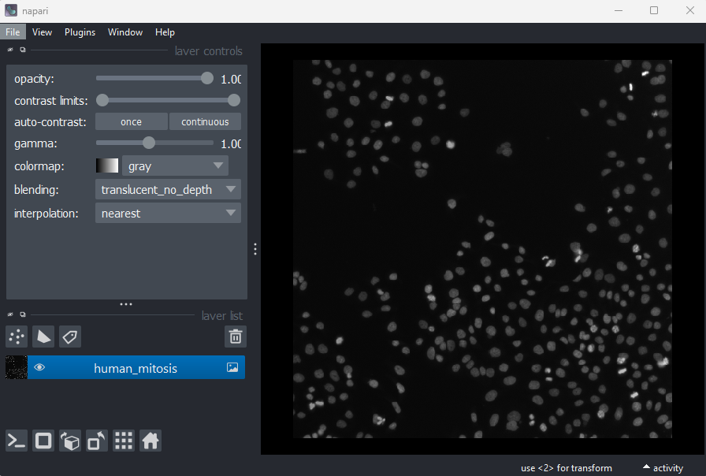
This 2D image shows the nuclei of human cells undergoing mitosis. If we really zoom in up-close by scrolling, we can see that this image is actually made up of many small squares with different brightness values. These squares are the image’s pixels (or ‘picture elements’) and are the individual units that make up all digital images.
If we hover over these pixels with the mouse cursor, we can see that each pixel has a specific value. Try hovering over pixels in dark and bright areas of the image and see how the value changes in the bottom left of the viewer:
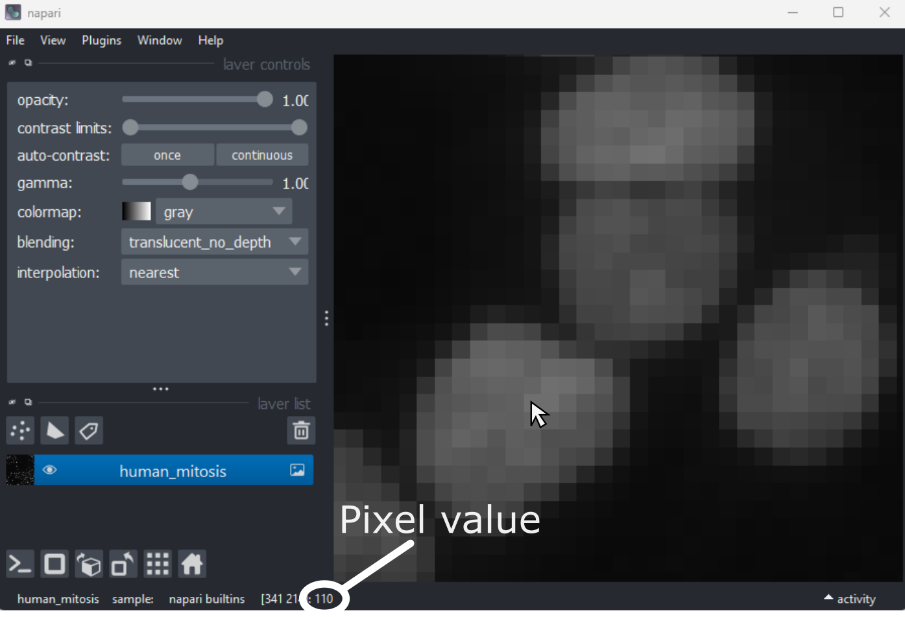
You should see that brighter areas have higher values than darker areas. The actual color is dictated by the contrast limits which map this value into an entry in a colormap, which provides the associated color to display.
Images are arrays of numbers
We’ve seen that images are made of individual units called pixels
that have specific values - but how is an image really represented in
the computer? Let’s dig deeper into Napari’s Image
layers…
In our notebook, let’s look at the human mitosis image more closely - copy the text in the ‘Python’ cell below into Napari’s console and then press the Enter key. You should see it returns text that matches the ‘Output’ cell below in response.
All of the information about the Napari viewer can be accessed
through the console with a variable called viewer. A
viewer has 1 to many layers, and here we access the top
(first) layer with viewer.layers[0]. Then, to access the
actual image data stored in that layer, we retrieve it with
.data:
PYTHON
# Get the image data for the first layer in Napari
image = viewer.layers[0].data
# Print the image values and type
print(image)
print(type(image))OUTPUT
[[ 8 8 8 ... 63 78 75]
[ 8 8 7 ... 67 71 71]
[ 9 8 8 ... 53 64 66]
...
[ 8 9 8 ... 17 24 59]
[ 8 8 8 ... 17 22 55]
[ 8 8 8 ... 16 18 38]]
<class 'numpy.ndarray'>You should see that a series of numbers are printed out that are
stored in a Python data type called a numpy.ndarray.
Fundamentally, this means that all images are really just arrays of
numbers (one number per pixel). Arrays are just rectangular grids of
numbers, much like a spreadsheet. Napari is reading those values and
converting them into squares of particular colours for us to see in the
viewer, but this is only to help us interpret the image contents - the
numbers are the real underlying data.
For example, look at the simplified image of an arrow below. On the left is the array of numbers, with the corresponding image display on the right. This is called a 4 by 4 image, as it has 4 rows and 4 columns:
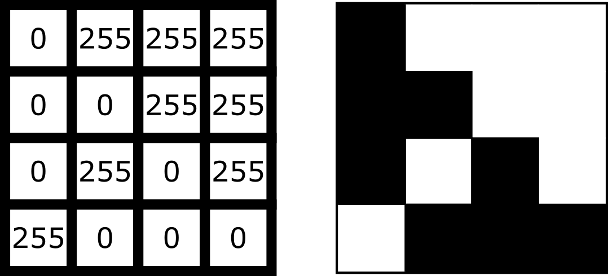
In Napari this array is a numpy.ndarray. NumPy is a popular python package that
provides ‘n-dimensional arrays’ (or ‘ndarray’ for short). N-dimensional
just means they can support any number of dimensions - for example, 2D
(squares/rectangles of numbers), 3D (cubes/cuboids of numbers) and
beyond (like time series, images with many channels etc. where we would
have multiple rectangles or cuboids of data which provide further
information all at the same location).
Creating an image
Where do the numbers in our image array come from? The exact details of how an image is created will depend on the type of microscope you are using e.g. widefield, confocal, superresolution etc. In general though, we have 3 main parts:
- Sample: the object we want to image e.g. some cells
- Objective lens: the lens that gathers the light and focuses it for detection
- Detector: the device that detects the light to form the digital image e.g. a CCD camera
To briefly summarise for a fluorescence microscopy image:
an excitation light source (e.g. a laser) illuminates the sample, and
this light is absorbed by a fluorescent label. This causes it to emit
light which is then gathered and focused by the objective lens, before
hitting the detector. The detector might be a single element (e.g. in a
laser-scanning microscope) or composed of an array of many small, light
sensitive areas - these are physical pixels, that will correspond to the
pixels in the final image. When light hits one of the detector elements
it is converted into electrons, with more light resulting in more
electrons and a higher final value for that pixel.
The important factor to understand is that the final pixel value is only ever an approximation of the real sample. Many factors will affect this final result including the microscope optics, detector performance etc.
Read the ‘A simple microscope’ section of Pete Bankhead’s bioimage book.
- What are some factors that influence pixel values?
- Can you come up with suggestions for any more?
Image dimensions
Let’s return to our human mitosis image and explore some of the key features of its image array. First, what size is it?
We can find this out by running the following in our notebook:
OUTPUT
(512, 512)The array size (also known as its dimensions) is stored in the
.shape. Here we see that it is (512, 512)
meaning this image is 512 pixels high and 512 pixels wide. Two values
are printed as this image is two dimensional (2D), for a 3D image there
would be 3, for a 4D image (e.g. with an additional time series) there
would be 4 and so on…
Image data type
The other key feature of an image array is its ‘data type’ - this
controls which values can be stored inside of it. For example, let’s
look at the data type for our human mitosis image - this is stored in
.dtype:
OUTPUT
dtype('uint8')We see that the data type (or ‘dtype’ for short) is
uint8. This is short for ‘unsigned integer 8-bit’. Let’s
break this down further into two parts - the type (unsigned integer) and
the bit-depth (8-bit).
Type
The type determines what kind of values can be stored in the array, for example:
- Unsigned integer: positive whole numbers
- Signed integer: positive and negative whole numbers
- Float: positive and negative numbers with a decimal point e.g. 3.14
For our mitosis image, ‘unsigned integer’ means that only positive whole numbers can be stored inside. You can see this by hovering over the pixels in the image again in Napari - the pixel value down in the bottom left is always a positive whole number.
Bit depth
The bit depth determines the range of values that can be stored e.g. only values between 0 and 255. This is directly related to how the array is stored in the computer.
In the computer, each pixel value will ultimately be stored in some
binary format as a series of ones and zeros. Each of these ones or zeros
is known as a ‘bit’, and the ‘bit depth’ is the number of bits used to
store each value. For example, our mitosis image uses 8 bits to store
each value (i.e. a series of 8 ones or zeros like
00000000, or 01101101…).
The reason the bit depth is so important is that it dictates the number of different values that can be stored. In fact it is equal to:
\[\large \text{Number of values} = 2^{\text{(bit depth)}}\]
Going back to our mitosis image, since it is stored as integers with a bit-depth of 8, this means that it can store \(2^8 = 256\) different values. This is equal to a range of 0-255 for unsigned integers.
We can verify this by looking at the maximum value of the mitosis image:
OUTPUT
255You can also see this by hovering over the brightest nuclei in the viewer and examining their pixel values. Even the brightest nuclei won’t exceed the limit of 255.
Dimensions and data types
Let’s open a new image by removing all layers from the Napari viewer, then copying and pasting the following lines into the Napari console:
PYTHON
from skimage import data
viewer.add_image(data.brain()[9, :, :], name="brain")
image = viewer.layers["brain"].dataThis opens a new 2D image of part of a human head X-ray.
What are the dimensions of this image?
What type and bit depth is this image?
What are the possible min/max values of this image array, based on the bit depth?
Common data types
NumPy supports a very wide range of data types, but there are a few that are most common for image data:
| NumPy datatype | Full name |
|---|---|
uint8 |
Unsigned integer 8-bit |
uint16 |
Unsigned integer 16-bit |
float32 |
Float 32-bit |
float64 |
Float 64-bit |
uint8 and uint16 are most common for images
from light microscopes. float32 and float64
are common during image processing (as we will see in later
episodes).
Choosing a bit depth
Most images are either 8-bit or 16-bit - so how to choose which to use? A higher bit depth will allow a wider range of values to be stored, but it will also result in larger file sizes for the resulting images. In general, a 16-bit image will have a file size that is about twice as large as an 8-bit image if no compression is used
The best bit depth choice will depend on your particular imaging experiment and research question. For example, if you know you have to recognise features that only differ slightly in their brightness, then you will likely need 16-bit to capture this. Equally, if you know that you will need to collect a very large number of images and 8-bit is sufficient to see your features of interest, then 8-bit may be a better choice to reduce the required file storage space. As always it’s about choosing the best fit for your specific project!
For more information on bit depths and types - we highly recommend the ‘Types & bit-depths’ chapter from Pete Bankhead’s free bioimage book.
Clipping and overflow
It’s important to be aware of what image type and bit depth you are using. If you try to store values outside of the valid range, this can lead to clipping and overflow.
Clipping: Values outside the valid range are changed to the closest valid value. For example, storing 1000 in a
uint8image may result in 255 being stored instead (the max value)Overflow: For NumPy arrays, values outside the valid range may be ‘wrapped around’ or create an
OverflowError, depending on what version of NumPy is installed. Older versions of NumPy may wrap the values around, so storing 256 in auint8image (max 255) would give 0, 257 would give 1 and so on… Newer versions of NumPy will raise anOverflowError.
Clipping and overflow result in data loss - you can’t get the original values back! So it’s always good to keep the data type in mind when doing image processing operations (as we will see in later episodes), and also when converting between different bit depths.
Coordinate system
We’ve seen that images are arrays of numbers with a specific shape (dimensions) and data type. How do we access specific values from this array? What coordinate system is Napari using?
To look into this, let’s hover over pixels in our mitosis image and
examine the coordinates that appear to the left of the pixel value. If
you closed the mitosis image, then open it again by removing all layers
and selecting:
File > Open Sample > napari builtins > Human Mitosis:
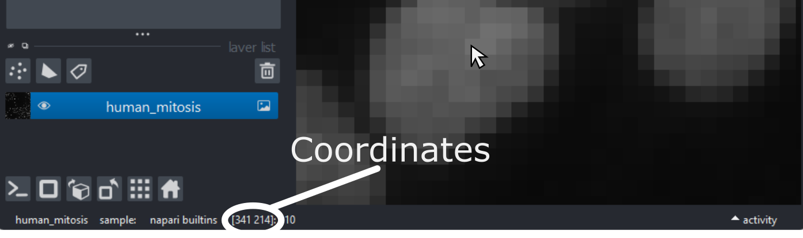
As you move around, you should see that the lowest coordinate values are at the top left corner, with the first value increasing as you move down and the second value increasing as you move to the right. This is different to the standard coordinate systems you may be used to (for example, from making graphs):
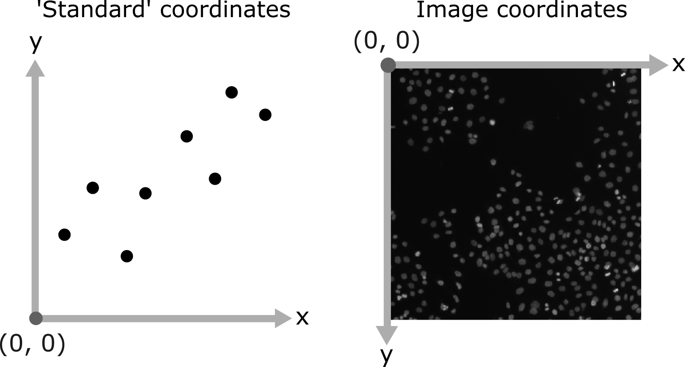
Note that Napari lists coordinates as [y, x] or [rows, columns], so e.g. [1,3] would be the pixel in row 1 and column 3. Remember that these coordinates always start from 0 as you can see in the diagram below:
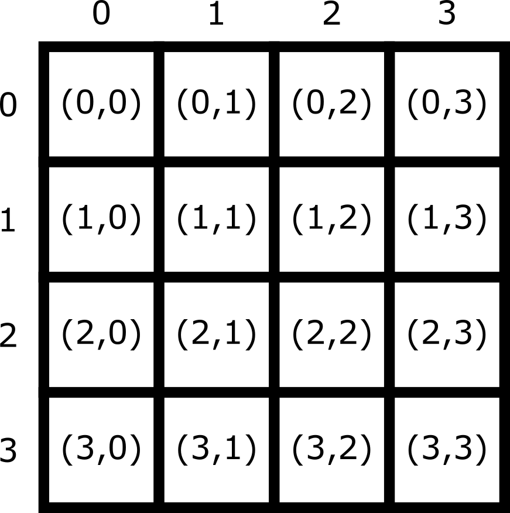
For the mitosis image, these coordinates are in pixels, but
images can also be scaled based on resolution to represent distances in
the physical world (e.g. in micrometres). This information is often
called pixel size and is stored in the image metadata. Also,
bear in mind that images with more dimensions (e.g. a 3D image) will
have longer coordinates like [z, y, x]…
Reading and modifying pixel values
First, make sure you only have the human mitosis image open (close any others). Run the following line in the console to ensure you are referencing the correct image:
PYTHON
# Get the image data for the layer called 'human_mitosis'
image = viewer.layers["human_mitosis"].dataPixel values can be read by hovering over them in the viewer, or by running the following in the console:
Pixel values can be changed by running the following in the console:
PYTHON
# Replace y and x with the correct y and x coordinate, and
# 'pixel_value' with the desired new pixel value e.g. image[3, 5] = 10
image[y, x] = pixel_value
viewer.layers["human_mitosis"].refresh()Given this information:
- What is the pixel value at x=213 and y=115?
- What is the pixel value at x=25 and y=63?
- Change the value of the pixel at x=10 and y=15 to 200. Check the new value - is it correct? If not, why not?
- Change the value of the pixel at x=10 and y=15 to 300. Check the new value - is it correct? If not, why not?
3
OUTPUT
200The new value is correct. If you zoom into the top left corner of the image, you should see the one bright pixel you just created.
4
ERROR
OverflowError Traceback (most recent call last)
Cell In[8], line 1
----> 1 image[15, 10] = 300
OverflowError: Python integer 300 out of bounds for uint8An OverflowError occurs when you try to update this
pixel value. This is because 300 exceeds the maximum value for this
8-bit image (max 255).
- Digital images are made of pixels
- Digital images store these pixels as arrays of numbers
- Light microscopy images are only an approximation of the real sample
- Napari (and Python more widely) use NumPy arrays to store images -
these have a
shapeanddtype - Most images are 8-bit or 16-bit unsigned integer
- Images use a coordinate system with (0,0) at the top left, x increasing to the right, and y increasing down
Content from Image Segmentation: Basic Concepts
Last updated on 2026-09-03 | Edit this page
Overview
Questions
- How do we perform instance segmentation in Napari?
- How do we measure cell size with Napari?
Objectives
- Use simple operations (like erosion and dilation) to clean up a segmentation.
- Use connected components labelling on a thresholded image.
- Calculate the number of cells and average cell volume.
- Save and edit your workflow to reuse on subsequent images.
- Perform more complex cell shape analysis using scikit-image’s
regionprops.
Introduction
Now that we are able to do basic operations in Napari, let’s start doing something more applicable by segmenting some cells and measuring key properties about them.
Let’s create another notebook that we made from the last lesson and call it instance_segmentation.ipynb
Let’s import napari and open up a viewer as we did last time.
What is segmentation?
In order to count the number of cells, we must ‘segment’ the nuclei in this image. Segmentation is the process of labelling each pixel in an image e.g. is that pixel part of a nucleus or not? Segmentation comes in two main types - ‘semantic segmentation’ and ‘instance segmentation’. In this section we’ll describe what both kinds of segmentation represent, as well as how they relate to each other, using some simple examples.
Semantic segmentation
In a semantic segmentation, pixels are grouped into different
categories (also known as ‘classes’). In this example, we are going to
use classic image processing techniques to assign each pixel in the
imate to one of two classes: nuclei or
background. Importantly, it doesn’t recognise which pixels
belong to different objects of the same category - for example, here we
don’t know which pixels belong to individual, separate nuclei. This is
the role of ‘instance segmentation’ that we’ll look at next.
This episode uses classic image processing techniques to perform the segmentation. If you would like to find more, please check out the extra Filtering and Thresholding episode.
First, we will blur the image using a Gaussian kernel. You can play
with how much the images is blurred by adjusting sigma
property in the gaussian function.
PYTHON
# Create a semantic segmentation
# Import the functions we need from scikit-image
from skimage.filters import threshold_otsu, gaussian
# Access the nuclei channel from the viewer
image = viewer.layers["nuclei"].data
# Smooth the image
blurred = gaussian(image, sigma=3)
# Compute a threshold
threshold = threshold_otsu(blurred)
print("The threshold picked is:", threshold) OUTPUT
The threshold picked is: 0.1407702761280905If you do pick a different blurring kernel, it might have a knock on effect on the threshold that the Otsu method chooses.
Using our threshold on the blurred image we create a semantic segmentation.
PYTHON
# Create a semantic segmentation
semantic_seg = blurred > threshold
# Add as a labels layer to the viewer
viewer.add_labels(semantic_seg)OUTPUT
<Labels layer 'semantic_seg' at 0x1f157459820>
In the Napari viewer you should see the image above. Mouse over the pixels and check their intensity. You should notice that the pixels assigned to background are assigned to 0 and the pixels categorized as nuclei are have a value of 1.
Instance segmentation
Now we will go about creating an ‘instance segmentation’ for this image. Instance segmentations recognise which pixels belong to individual ‘instances’ of our category (nuclei). This is the kind of segmentation we will need in order to count the number of nuclei (and therefore the number of cells) in our image.
Note that it’s common for instance segmentation to be created by first making a semantic segmentation, then splitting the resulting category from the semantic segmentation into individual instances. This isn’t always the case though - it will depend on the type of segmentation method you use.
We will use the the label function from scikit-image to create an instance segmentation.
The label function is an example of connected component analysis. Connected component analysis will go through the entire image, determine which parts of the segmentation are connected to each other and form separate objects. Then it will assign each connected region a unique integer value.
PYTHON
# Instance segmentation
# Import the label function
from skimage.measure import label
# Run the label function on the mask image
instance_seg = label(semantic_seg)
# Add the result to the viewer
viewer.add_labels(instance_seg)
You should see the above image in the Napari viewer. The different colours are used to represent the labels of separate objects. Again, mouse over the image and notice the change of pixels. The background pixels are still assigned to 0, but each instance of the nuclei has a different label value, which has a different color assigned to that value.
Counting the nuclei
Because the instance segmentation assigns a different integer value starting at 1 and increasing in steps of 1 (1, 2, 3, …) to each object, counting the number of nuclei can be done very easily by taking the maximum value of the instance segmentation image.
PYTHON
# Count the nuclei
number_of_nuclei = instance_seg.max()
print("Number of nuclei: ", number_of_nuclei)OUTPUT
Number of nuclei: 18Using napari-skimage plugin to measure nuclei size
In the napari toolbar, open
Layers > Measure > Regionprops (labels) (skimage).
You should see a dialog like this:
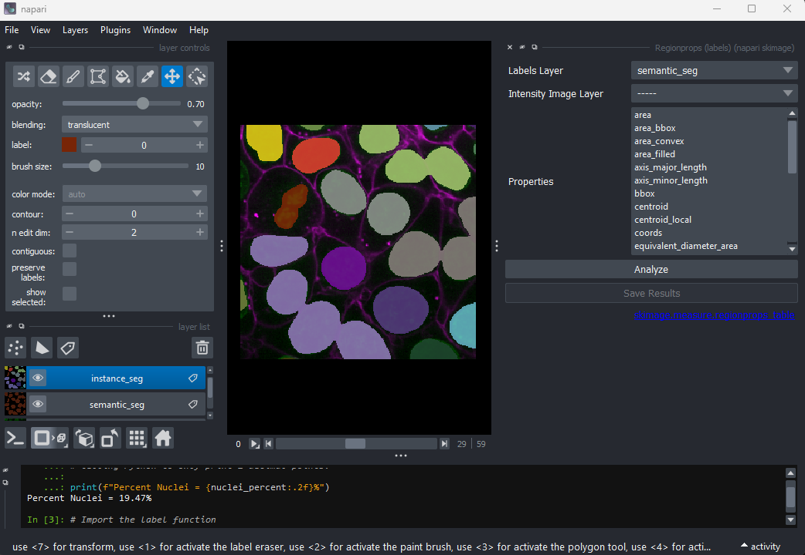
Select instance_seg in the ‘Labels layer’ drop down box
and nuclei in the ‘Intensity Image Layer’ drop down box.
You can choose to measure various shape properties with this plugin but
for now let’s keep it simple, making sure that only area,
centroid and label are selected. You will need
to hold down ctrl (or ⌘ on Mac) to select multiple
items in the list.
Click Analyze - a table of numeric values should appear
in napari. If it opens in an inconvenient location, you can click and
drag on the header containing the x,  and other icons
next to the table window to reposition it.
and other icons
next to the table window to reposition it.
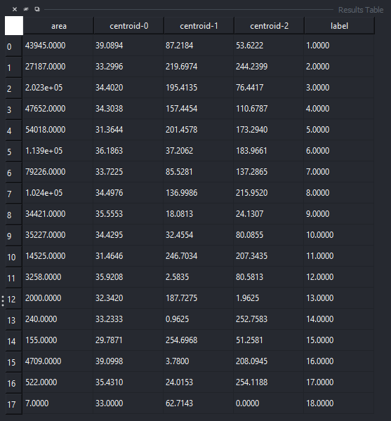
Regionprops
Before, we used the napari‑skimage plugin to create a table with properties of the nuclei. The same properties can also be computed using scikit-image directly in our notebook.
PYTHON
# Create a Regionprops table
# Import tools
from skimage.measure import regionprops_table
import pandas as pd
# Compute region properties
props = regionprops_table(
label_image=instance_seg,
properties=["label", "area", "centroid"]
)
# Convert to a pandas DataFrame
props_df = pd.DataFrame(props)
# Display the table
props_dfSorting and inspecting the results
Regionprops can generate a lot of information on the shape and size
of each connected region. For now we will focus only on the column
headed area, which shows the size in pixels.
Let’s sort our table so that it is easier to see the extreme values.
PYTHON
# Sort the table based on cell size (area)
sorted_props_df = props_df.sort_values("area")
# Display the table
sorted_props_dfOUTPUT
label area centroid-0 centroid-1 centroid-2
0 1 43945.0 39.089407 87.218409 53.622232
1 2 27187.0 33.299555 219.697392 244.239931
2 3 202258.0 34.401952 195.413526 76.441688
3 4 47652.0 34.303828 157.445417 110.678712
4 5 54018.0 31.364397 201.457755 173.293958
5 6 113935.0 36.186343 37.206205 183.966147
6 7 79226.0 33.722503 85.528072 137.286535
7 8 102444.0 34.497628 136.998624 215.951993
8 9 34421.0 35.555271 18.081346 24.130676
9 10 35227.0 34.429500 32.455418 80.085531
10 11 14525.0 31.464578 246.703408 207.343477
11 12 3258.0 35.920810 2.583487 80.581338
12 13 2000.0 32.342000 187.727500 1.962500
13 14 240.0 33.233333 0.962500 252.758333
14 15 155.0 29.787097 254.696774 51.258065
15 16 4709.0 39.099809 3.779996 208.094500
16 17 522.0 35.431034 24.015326 254.118774
17 18 7.0 33.000000 62.714286 0.000000The largest nucleus
According to the table, nucleus 3 is larger than the other nuclei (202258 pixels). In the what is an image lesson, we learnt to use the mouse pointer to find particular values in an image. Hovering the mouse pointer over the light purple nuclei at the bottom left of the image we see that these apparently four separate nuclei have been labelled as a single nucleus.
In the layer controls of the instance_seg layer we can confirm this
by selecting label 3 and enabling
show selected.
Why Are Separate Nuclei Getting the Same Label?

In the image above, three of the light purple nuclei are visibly
touching, so it is not surprising that they have been considered as a
single connected component and thus labelled as a single
nucleus. What about the fourth apparently separate nucleus? Why does it
have the same label?
It is important to remember that this is a three-dimensional image and so pixels will be considered as “connected” if they are adjacent to another segmented pixel in any of the three dimensions (and not just in the two-dimensional slice that you are looking at).
You may remember from our first
lesson that we can change to 3D view mode by pressing the  button. Try it now.
button. Try it now.
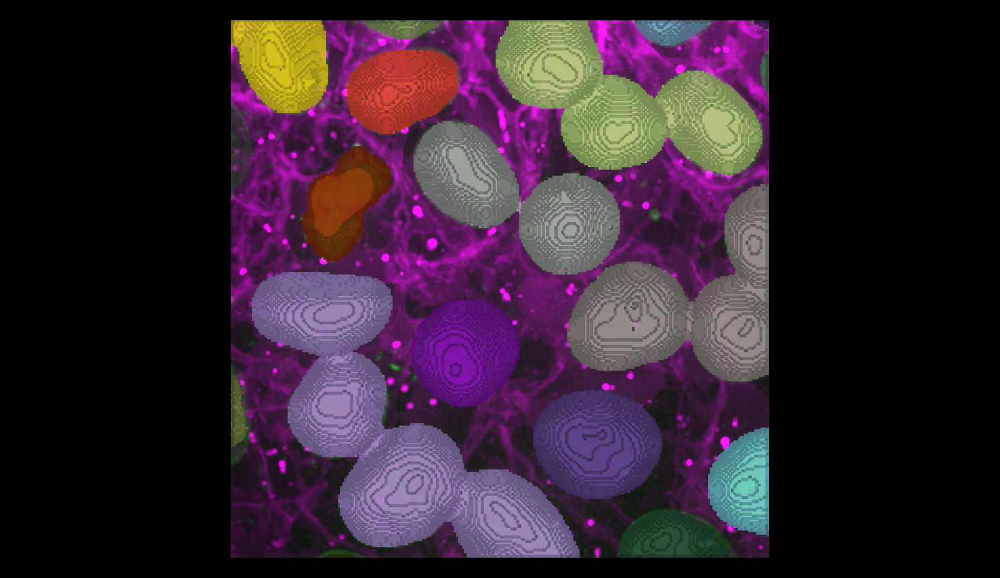
You should see the image rendered in 3D, with a clear join between the upper most light purple nucleus and its neighbour.The smallest nucleus
The smallest nucleus is labelled 18, with a size of 7 pixels. We can
use the position data (the centroid columns) in the table
to help find this nucleus. We need to navigate to slice 33 and get the
mouse near the top left corner (33 63 0) to find label 18 in the
image.

Nucleus 18 is right at the edge of the image, so is only a partial nucleus. Partial nuclei will need to be excluded from our analysis. We’ll do this later in the lesson with a clear border filter. However, first we need to solve the problem of joined nuclei.
Separating joined nuclei
Our first problem is how to deal with four apparently distinct nuclei (labelled with a light purple colour) being segmented as a single nucleus.
Erosion
To separate our nuclei, we can ‘erode’ our segmentation. Erosion is a type of filter, similar to those we covered in the filters and thresholding episode. It will make all segmented nuclei smaller, by setting pixels at their edge to zero.
The size / shape of the region that gets set to zero is controlled by the filter’s ‘footprint’. We’ll use scikit-image’s ball function to generate a sphere to use as the footprint. Any pixels closer to the edge of the nucleus than the radius of this sphere will be set to zero.
Create a new cell and run:
PYTHON
# Erode the semantic segmentation
# import tools
from skimage.morphology import erosion, ball
# Erosion with a radius 1 ball
eroded_mask = erosion(semantic_seg, footprint = ball(1))
viewer.add_labels(eroded_mask, name = "eroded_ball_1")What is a good radius?
We can change the radius of the footprint to control the amount of erosion.
Try eroding the semantic_seg layer with different
integer values for the radius. What radius do you need to ensure all
nuclei are separate?
Note that larger radius values will take longer to run on your computer.
Keep your radius values <= 15.
To test different values of radius, you can assign a different value
to radius, e.g. radius = 5 and rerun the last two lines
from above. Or you can try with a Python for
loop which enables us to test multiple values of radius quickly.
PYTHON
# Erode the mask using a ball
# Radius 5
eroded_mask = erosion(semantic_seg, footprint=ball(5))
# Add the eroded mask as a new layer in Napari
viewer.add_labels(eroded_mask, name="eroded_ball_5")
# Radius 10
eroded_mask = erosion(semantic_seg, footprint=ball(10))
# Add the eroded mask as a new layer in Napari
viewer.add_labels(eroded_mask, name="eroded_ball_10")
# Radius 15
eroded_mask = erosion(semantic_seg, footprint=ball(15))
# Add the eroded mask as a new layer in Napari
viewer.add_labels(eroded_mask, name="eroded_ball_15")
For-loop to test different radii
Try using a Python for loop to test several radius
values.
You can change the radius manually (for example,
radius = 5) and re‑run the erosion each time.
But if you want to test many radius values quickly, a
Python for
loop lets you repeat the same steps for each radius in a list.
PYTHON
# List of radii to test
radii = [5, 10, 15]
# A for-loop that tests several radii
for radius in radii:
# Make a name for the output layer
layer_name = "eroded_ball_" + str(radius)
# Erode the mask using this radius
eroded_mask = erosion(semantic_seg, footprint=ball(radius))
# Add the eroded mask as a new layer in Napari
viewer.add_labels(eroded_mask, name=layer_name)It is also possible to run the erosion function through a plugin:
Layers > Filter > Morphology > Binary Morphology (napari skimage).
Instance segmentation using the eroded mask
Now we have separate nuclei, lets try creating instance labels again.
PYTHON
# Create a new instance segmentation using the eroded mask
eroded_mask = erosion(semantic_seg, footprint=ball(10))
instance_seg = label(eroded_mask)
# Remove old instance segmentation
viewer.layers.remove('instance_seg')
# Add new instance segmentation
viewer.add_labels(instance_seg)
Looking at the image above, there are no longer any incorrectly joined nuclei.
Dilation
We managed to separate the nuclei, however performing any size or shape analysis on these nuclei will be flawed, as they are heavily eroded.
We can largely undo the erosion by using scikit-image’s expand labels function.
The expand labels function is a filter which performs a
dilation, expanding the bright (non-zero) parts of the
image. The expand labels function adds an extra step to stop the
dilation when two neighbouring labels meet, preventing overlapping
labels.
PYTHON
from skimage.segmentation import expand_labels
# Dilate eroded instance segmentation with the same radius
instance_seg = expand_labels(instance_seg, 10)
# Remove old instance segmentation
viewer.layers.remove('instance_seg')
# Add new instance segmentation
viewer.add_labels(instance_seg) There are now 19 apparently correctly labelled nuclei that appear to be
the same shape as in the original mask image.
There are now 19 apparently correctly labelled nuclei that appear to be
the same shape as in the original mask image.
Opening
In order to create a correct instance segmentation we have performed
a mask erosion followed by a label expansion. This is a common image
operation often used to remove background noise, known as as
opening, or an erosion followed by a dilation. In addition
to helping us separate instances it will have the effect of removing
objects smaller than the erosion footprint, in this case a sphere with
radius 10 pixels.
Is the erosion completely reversible?
If we compare the eroded and expanded image with the original mask, what will we see?
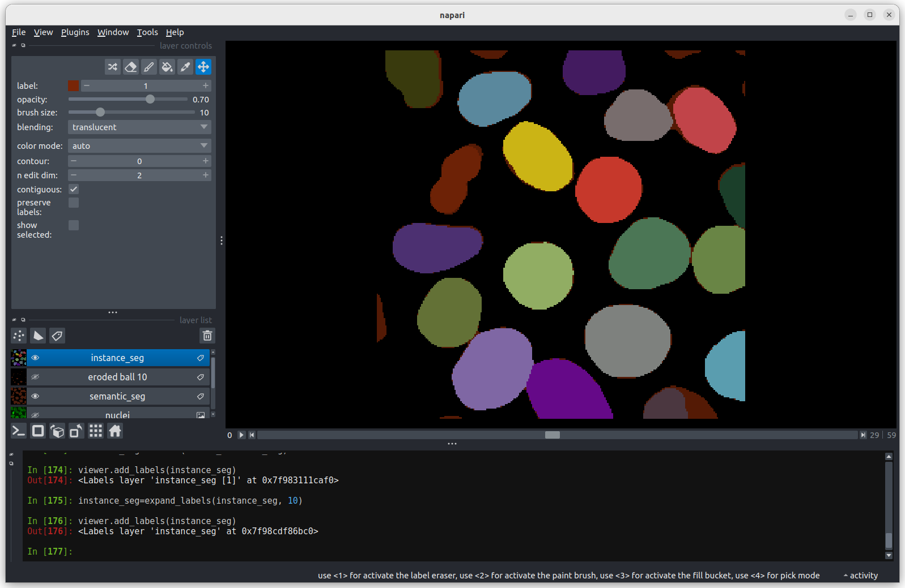
Looking at the above image we can see some small mismatches around the edges of most of the nuclei. It should be remembered when looking at this image that it is a single slice though a 3D image, so in some cases where the differences look large (for example the nucleus at the bottom right) they may still be only one pixel deep. Will the effect of this on the accuracy of our results be significant?Removing Border Cells
Now we return to the second problem with our initial instance segmentation, the presence of partial nuclei around the image borders. As we’re measuring nuclei size, the presence of any partially visible nuclei could substantially bias our statistics.
We can remove these from our analysis using scikit-image’s clear border function.
PYTHON
# Remove partial nuclei touching the image border
# Import scikit-image's clear_border
from skimage.segmentation import clear_border
# Clear border
instance_seg = clear_border(instance_seg)
# Remove old instance segmentation
viewer.layers.remove('instance_seg')
# Add new instance segmentation
viewer.add_labels(instance_seg)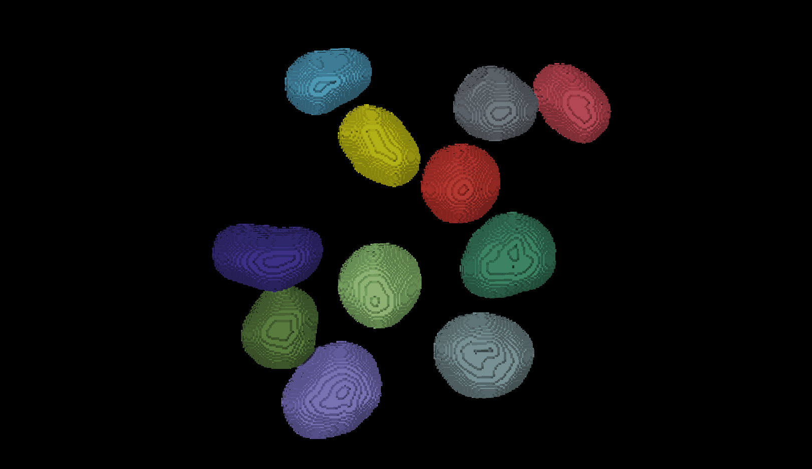
We now have an image with 11 clearly labelled nuclei. You may notice that the smaller nucleus (dark orange) near the top left of the image has been removed even though we can’t see where it touches the image border. Remember that this is a 3D image and clear border removes nuclei touching any border. This nucleus has been removed because it touches the top or bottom (z axis) of the image.
Let’s check the nuclei count as we did above.
PYTHON
# First count the nuclei
number_of_nuclei = instance_seg.max()
print("Number of nuclei: ", number_of_nuclei)OUTPUT
Number of nuclei: 19Why are there 19 nuclei?
When we ran clear_borders the pixels corresponding to
border nuclei were set to zero, however the total number of labels in
the image was not changed, so whilst there are 19 labels in the image
some of them have no corresponding pixels. The easiest way to correct
this is to relabel the image (and replace the old instance segmentation
in the viewer.)
PYTHON
# Relabel
instance_seg = label(instance_seg)
# Remove old instance segmentation
viewer.layers.remove('instance_seg')
# Add relabeled instance segmentation
viewer.add_labels(instance_seg)
# Number of nuclei after relabling
number_of_nuclei = instance_seg.max()
print("Number of nuclei:", number_of_nuclei)OUTPUT
Number of nuclei: 11Number of pixels per nucleus
Now that your instance segmentation is correct, you can finish the analysis in our notebook.
Let’s start by counting the pixels per nucleus like we did before.
PYTHON
# Count the pixels per nucleus
# Extract region properties
props = regionprops_table(
instance_seg,
properties=["label", "area"] # 'area' = number of pixels
)
# Convert to a pandas DataFrame
props_df = pd.DataFrame(props)
props_dfAre these pixel counts useful measurements? Pixel counts depend on image resolution, rather than the real size of a biological structure. This means images of the exact same nuclei taken with different settings could give vastly different values for the number of pixels.
This is why biologists convert pixel counts into physical units like µm³ that allow comparisons across experiments, microscopes, and labs.
Volume per nuclei
To convert to volumes we need to know the pixel size, which tells us the physical measurement of each dimension of a pixel. This information is often stored inside the image metadata that comes with the pixel data itself.
Unfortunately the sample image we’re using in this lesson has no metadata. Fortunately the image pixel sizes can be found in the scikit-image documentation. So we can assign a pixel size of 0.26μm (x axis), 0.26μm (y axis) and 0.29μm (z axis).
Using this pixel size, we can then calculate the nucleus volume in cubic micrometres.
PYTHON
# Volume of a single voxel in cubic micrometres
voxel_volume = 0.26 * 0.26 * 0.29
# Add a physical volume column
props_df["volume_um3"] = props_df["area"] * voxel_volume
props_dfOnce you know the voxel size, pandas makes the
conversion and analysis extremely easy:
OUTPUT
count 11.000000
mean 855.980145
std 178.497656
min 602.391712
25% 729.190384
50% 800.019636
75% 983.473868
max 1181.493872
Name: volume_um3, dtype: float64
- Connected component analysis (the label function) was used to assign each connected region of a mask a unique integer value. This produces an instance segmentation from a semantic segmentation.
- Erosion and dilation filters were used to correct the instance segmentation. Erosion was used to separate individual nuclei. Dilation (or expansion) was used to return the nuclei to their (approximate) original size.
- Partial nuclei at the image edges can be removed with the clear_border function.
- The napari-skimage plugin can be used to interactively examine the nuclei shapes.